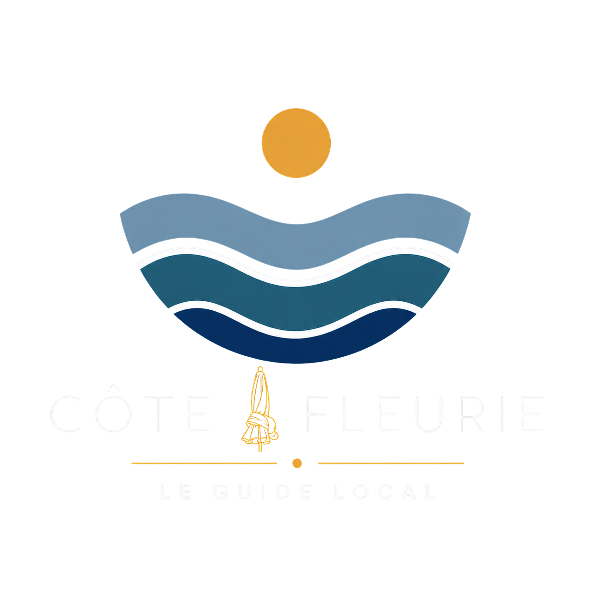

<div class="footer-content">

    <div class="footer-brand">
        

        <p>
            Votre guide local pour découvrir
            la Côte Fleurie.
        </p>
    </div>

    <div class="footer-links">
        <div>
            <h3>Explorer</h3>

            <a href="">Accueil</a>
            <a href="">Découvrir</a>
            <a href="">Expériences</a>
            <a href="">Saveurs</a>
            <a href="">Pratique</a>
            <a href="">Carte</a>
        </div>

        <div>
            <h3>Informations</h3>

            <a href="">À propos</a>
            <a href="">Contact</a>
        </div>
    </div>

</div>